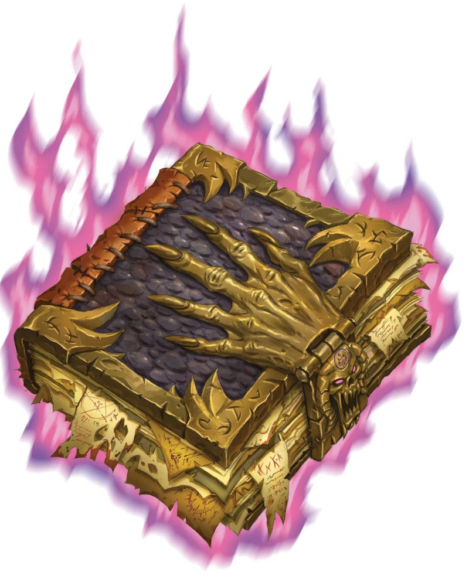

Démonomicon d'Iggwilv
Objet merveilleux, artéfact (nécessite un lien)
En tant que traité exhaustif documentant les strates infinies des Abysses ainsi que ses habitants, le Démonomicon d'Iggwilv est le plus complet et blasphématoire des tomes de démonologie dans tout le multivers. Le tome collige les anciens tout comme les plus récents blasphèmes des Abysses et des démons. Les démons ont tenté de censurer le texte et, bien que plusieurs sections aient été arrachées du dos du livre, les principaux chapitres subsistent, continuant à dévoiler les secrets démoniaques. Et le livre contient bien plus que des blasphèmes. Captif sous des lignes de script s'agite un fragment des Abysses qui garde le livre à jour, peu importe le nombre de pages qui lui a été retiré. Et il aspire à être plus qu'une simple référence.
Propriétés aléatoires. Cet artefact possède un certain nombre de propriétés déterminées aléatoirement :
• 2 propriétés bénéfiques mineures
• 1 propriété néfaste mineure
• 1 propriété néfaste majeure
Sorts. Le livre possède 8 charges. Il récupère 1d8 charges dépensées chaque jour à l'aube. Lorsque vous le tenez, vous pouvez utiliser une action pour lancer le sort fou rire de Tasha ou dépenser 1 charge ou plus pour lancer des sorts suivants (sauvegarde DD 20) : cercle magique (1 charge), urne magique (3 charges), allié planaire (3 charges), contrat (2 charges), changement de plan (vers les couches des Abysses uniquement ; 3 charges), convocation de fiélon (3 charges).
Référence abyssale. Vous pouvez faire référence au Démonomicon à chaque fois que vous tentez un jet d'Intelligence visant à obtenir de l'information à propos des démons ou un jet de Sagesse (Survie) concernant les Abysses. Ce faisant, vous pouvez additionner le double de votre bonus de maîtrise au jet.
Châtiment des fiélons. Votre magie fait souffrir les fiélons. Lorsque vous portez le livre, au moment de déterminer les dégâts d'un sort que vous lancez à l'encontre d'un fiélon, vous utilisez le résultat maximum possible plutôt que de lancer les dés.
Piégeage. Lorsque vous portez le livre, à chaque fois que vous lancez le sort cercle magique en nommant uniquement des fiélons, ou le sort contrat en visant un fiélon, le sort est lancé au niveau 9, sans égard au niveau du sort que vous avez utilisé, le cas échéant. De plus, le fiélon est a un désavantage aux jets de sauvegarde contre le sort.
Confinement. Les 10 premières pages du Démonomicon sont vierges. Au prix d'une action, lorsque vous tenez le livre, vous pouvez cibler un fiélon que vous pouvez voir et qui est captif d'un cercle magique. Le fiélon doit réussir un jet de sauvegarde de Charisme de DD 20, avec un désavantage, sans quoi il devient prisonnier d'une des pages vierges du Démonomicon, qui se remplit d'un texte détaillant le nom communément connu de la créature capturée ainsi que ses vilenies. Une fois utilisée, cette action ne peut plus l'être de nouveau avant la prochaine aube. Lorsque vous terminez un repos long, si vous êtes sur le même plan d'existence que le Démonomicon, la créature captive du livre qui a le facteur de puissance le plus élevé peut tenter de vous posséder. Vous devez faire un jet de sauvegarde de Charisme de DD 20. En cas d'échec, vous êtes possédé par la créature, qui vous contrôle comme une marionnette. La créature qui vous possède peut vous libérer par une action. Elle apparaît alors dans l'espace inoccupé le plus près. En cas de résussite, le fiélon ne peut plus tenter de vous posséder durant les 7 prochains jours. Lorsque le tome est découvert, il contient 1d4 fiélons dans ses pages, un assortiment quelconque de démons.
Détruire le Démonomicon. Pour détruire le livre, six seigneurs démons distincts doivent arracher chacun un sixième des pages du livre. Dans ce cas, les pages réapparaissent au bout de 24 heures. Avant que s'écoulent toutes ces heures, toute personne qui ouvre les restes de la reliure est transportée vers une couche émergente des Abysses qui se trouve dissimulée dans le livre. Au sein de ce domaine létal et semi-conscient se trouve un artefact perdu depuis longtemps, le bâton de Fraz-Urb'luu. Si le bâton est extirpé de cette pochette planaire, le tome est réduit à une version ordinaire et désuète du Tome de Zyx, l'oeuvre qui a servi de fondation pour le Démonomicon. Une fois que le bâton émerge, le seigneur démon Fraz-Urb'luu l'apprend immédiatement.
Propriétés aléatoires. Cet artefact possède un certain nombre de propriétés déterminées aléatoirement :
• 2 propriétés bénéfiques mineures
• 1 propriété néfaste mineure
• 1 propriété néfaste majeure
Sorts. Le livre possède 8 charges. Il récupère 1d8 charges dépensées chaque jour à l'aube. Lorsque vous le tenez, vous pouvez utiliser une action pour lancer le sort fou rire de Tasha ou dépenser 1 charge ou plus pour lancer des sorts suivants (sauvegarde DD 20) : cercle magique (1 charge), urne magique (3 charges), allié planaire (3 charges), contrat (2 charges), changement de plan (vers les couches des Abysses uniquement ; 3 charges), convocation de fiélon (3 charges).
Référence abyssale. Vous pouvez faire référence au Démonomicon à chaque fois que vous tentez un jet d'Intelligence visant à obtenir de l'information à propos des démons ou un jet de Sagesse (Survie) concernant les Abysses. Ce faisant, vous pouvez additionner le double de votre bonus de maîtrise au jet.
Châtiment des fiélons. Votre magie fait souffrir les fiélons. Lorsque vous portez le livre, au moment de déterminer les dégâts d'un sort que vous lancez à l'encontre d'un fiélon, vous utilisez le résultat maximum possible plutôt que de lancer les dés.
Piégeage. Lorsque vous portez le livre, à chaque fois que vous lancez le sort cercle magique en nommant uniquement des fiélons, ou le sort contrat en visant un fiélon, le sort est lancé au niveau 9, sans égard au niveau du sort que vous avez utilisé, le cas échéant. De plus, le fiélon est a un désavantage aux jets de sauvegarde contre le sort.
Confinement. Les 10 premières pages du Démonomicon sont vierges. Au prix d'une action, lorsque vous tenez le livre, vous pouvez cibler un fiélon que vous pouvez voir et qui est captif d'un cercle magique. Le fiélon doit réussir un jet de sauvegarde de Charisme de DD 20, avec un désavantage, sans quoi il devient prisonnier d'une des pages vierges du Démonomicon, qui se remplit d'un texte détaillant le nom communément connu de la créature capturée ainsi que ses vilenies. Une fois utilisée, cette action ne peut plus l'être de nouveau avant la prochaine aube. Lorsque vous terminez un repos long, si vous êtes sur le même plan d'existence que le Démonomicon, la créature captive du livre qui a le facteur de puissance le plus élevé peut tenter de vous posséder. Vous devez faire un jet de sauvegarde de Charisme de DD 20. En cas d'échec, vous êtes possédé par la créature, qui vous contrôle comme une marionnette. La créature qui vous possède peut vous libérer par une action. Elle apparaît alors dans l'espace inoccupé le plus près. En cas de résussite, le fiélon ne peut plus tenter de vous posséder durant les 7 prochains jours. Lorsque le tome est découvert, il contient 1d4 fiélons dans ses pages, un assortiment quelconque de démons.
Détruire le Démonomicon. Pour détruire le livre, six seigneurs démons distincts doivent arracher chacun un sixième des pages du livre. Dans ce cas, les pages réapparaissent au bout de 24 heures. Avant que s'écoulent toutes ces heures, toute personne qui ouvre les restes de la reliure est transportée vers une couche émergente des Abysses qui se trouve dissimulée dans le livre. Au sein de ce domaine létal et semi-conscient se trouve un artefact perdu depuis longtemps, le bâton de Fraz-Urb'luu. Si le bâton est extirpé de cette pochette planaire, le tome est réduit à une version ordinaire et désuète du Tome de Zyx, l'oeuvre qui a servi de fondation pour le Démonomicon. Une fois que le bâton émerge, le seigneur démon Fraz-Urb'luu l'apprend immédiatement.
Tasha´s Cauldron of Everything
